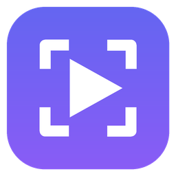
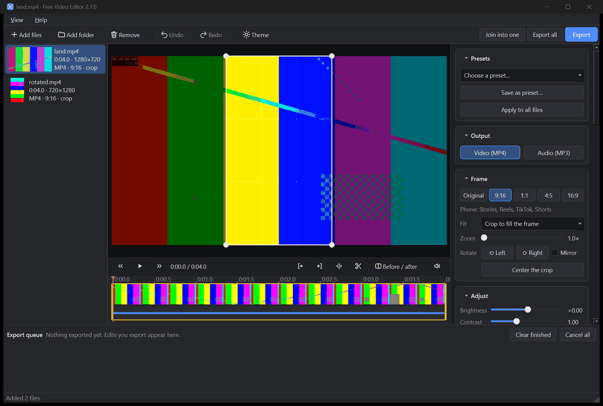

Free Video Editor
محرر فيديو مجاني لنظام ويندوز. اصنع مقاطع لتيك توك وريلز وشورتس، وأصلح الفيديوهات التي لا تعمل على هاتفك، وغير ذلك. كل شيء يبقى على جهازك.
مجاني ومفتوح المصدر (رخصة MIT). بلا حساب ولا إعلانات ولا رفع للملفات. قد يعرض ويندوز تحذيرًا عند أول تشغيل: اعرف السبب.
ملاحظة: للتطبيق واجهة عربية كاملة من الإصدار 3.0 (تتبع لغة ويندوز، ويمكن تغييرها من «عرض» ثم «اللغة»). وتُكتب أسماء الأزرار والإعدادات في هذه الصفحات كما تظهر في الواجهة الإنجليزية، ويأتي بجانبها شرح بالعربية.

ماذا يفعل؟
أضف فيديوهاتك، واختر إعدادًا جاهزًا، ثم اضغط «Export» (تصدير). لا تتغيّر ملفاتك الأصلية أبدًا: تُحفظ النتائج بجانبها كملفات جديدة، مثل name (phone).mp4.
المحرر
- مشغّل فيديو مع شريط زمني: صور مصغّرة وموجة صوتية ومقابض سحب للقص
- حذف أجزاء من منتصف الفيديو، ويتخطّى التشغيل الأجزاء المحذوفة
- دمج عدة ملفات في فيديو واحد بالترتيب الذي تختاره
- مربع اقتصاص على الفيديو مباشرة: اسحبه لتختار ما يبقى، وحرّك عجلة الفأرة للتكبير
- عرض «قبل / بعد» يُظهر بالضبط شكل الناتج بعد التصدير
- تراجع وإعادة لكل تغيير، ومظهر داكن وآخر فاتح، وسحب وإفلات للملفات
- قائمة تصدير تعمل في الخلفية مع شريط تقدّم والوقت المتبقي
الفيديو (MP4)
- تغيير شكل الفيديو ليناسب الهواتف (9:16) أو المنشورات المربعة (1:1) أو العمودية (4:5) أو العريضة (16:9)
- اقتصاص لملء الإطار، أو إظهار الفيديو كاملًا مع خلفية ضبابية أو أشرطة سوداء
- تدوير وعكس وإزالة الصوت، واختيار الحجم ومعدل الإطارات والجودة
- السطوع والتباين والتشبّع والحدّة وتقليل التشويش، ومؤثرات جاهزة بنقرة واحدة
- تثبيت اللقطات المهتزة المصوّرة بالهاتف
- نقرة واحدة لإعداد Play on phone (التشغيل على الهاتف)، أو إعدادات تيك توك وريلز وشورتس وإنستغرام ويوتيوب وحالة واتساب
- تظهر تسجيلات الهاتف المخزّنة بشكل جانبي بالاتجاه الصحيح
الصوت (MP3)
- حوّل أي فيديو إلى MP3 بجودة 128 أو 192 أو 256 أو 320 kbps، أو بمعدل بت متغيّر
- يحتفظ ببيانات العنوان والفنان
- يعمل أيضًا مع الملفات الصوتية (MP3 وM4A وAAC وWAV وFLAC وOGG وOPUS) للقص أو الحذف أو التحويل
السرعة والتلاشي والقص
- قصّ أي نطاق من الفيديو، واحذف ما تشاء من الأجزاء
- سرعة من 0.25× إلى 4× مع صوت طبيعي، أو تشغيل بالعكس
- تلاشي تدريجي عند البداية والنهاية، بمدة مستقلة للصورة وللصوت
- لا يستبدل أي ملف موجود: إذا كان الاسم مستخدمًا يُضاف رقم، مثل
file (1).mp3 - يفتح ملفات MP4 وMOV وMKV وAVI وWEBM وM4V وغيرها من الصيغ الشائعة
الفيديو لا يعمل على هاتفك؟
كثيرًا ما يكون معدل الإطارات في تسجيلات الألعاب ولقطات الشاشة متغيّرًا، وبعض الهواتف تعرض رسالة بأن الفيديو غير مدعوم. يمنح إعداد Play on phone الفيديو معدل إطارات ثابتًا وإعدادات مناسبة للهواتف، مع الإبقاء على الصورة كاملة والصوت. ويمكنك تحويل مجلد كامل دفعة واحدة بزر «Export all» (تصدير الكل).
الدليل خطوة بخطوةهل هو آمن؟ ولماذا يحذّرني ويندوز؟
الجواب المختصر: نعم، وإليك كيف تتحقق بنفسك.
قد يعرض Windows SmartScreen رسالة «Windows protected your PC» عند أول تشغيل للتطبيق. يحدث هذا مع أي برنامج جديد أو غير موقَّع رقميًا، لأن شهادات التوقيع الرقمي مدفوعة وهذا المشروع مجاني. وهو لا يعني أنه اكتُشف فيروس. للمتابعة اضغط «More info» (مزيد من المعلومات) ثم «Run anyway» (تشغيل على أي حال) (أو ما يقابلهما إن كان ويندوز لديك بالعربية).
الشيفرة مفتوحة. الشيفرة المصدرية كاملة منشورة على GitHub، وتُبنى ملفات التنزيل هناك بسير عمل آلي. ويعرض كل إصدار قيم SHA-256 لتتأكد أن ملفك هو الملف المنشور نفسه.
لا شيء يُرفع. يجري كل العمل على جهازك بمحرك FFmpeg المدمج في التطبيق. لا يتضمن حسابات أو إعلانات أو تتبّعًا. لا يتصل التطبيق بالإنترنت إلا لفحص اختياري مرة في اليوم بحثًا عن إصدار أحدث، ولتنزيل نموذج الكلام مرة واحدة إذا استخدمت التسمية التوضيحية التلقائية.
احصل عليه
يضيف المثبّت اختصارًا في قائمة ابدأ، ويمكنه إضافة اختصار على سطح المكتب وخيار «Open with Free Video Editor» (فتح باستخدام Free Video Editor) لملفات الفيديو والصوت. ويُثبَّت لحسابك أنت فقط دون الحاجة إلى صلاحيات المسؤول. أما النسخة المحمولة فهي ملف واحد: انقر عليه نقرًا مزدوجًا. وفي الحالتين كل ما يحتاجه التطبيق مضمَّن فيه.
يمكنك أيضًا التثبيت من سطر الأوامر عبر winget: winget install AhmedRagab.FreeVideoEditor (يعمل هذا الأمر بعد اعتماد القائمة في winget).
أحدث إصدار: راجع صفحة الإصدار. لإزالة النسخة المثبّتة استخدم «Settings» (الإعدادات) ثم «Apps» (التطبيقات) في ويندوز.